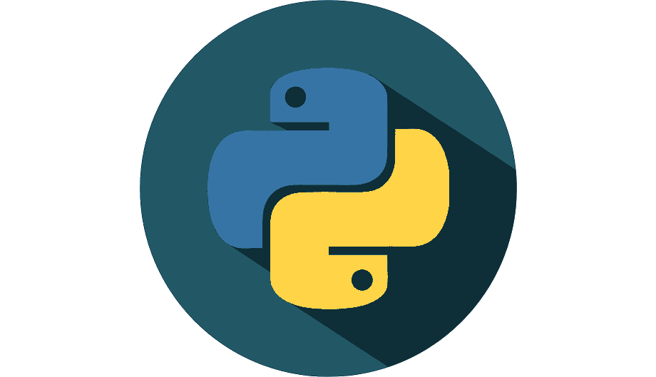

My Skills


People used to call me Josephine, now I'm studying at BINUS UNIVERSITY majoring in Computer Science and Mathematics. From then until now, I still don't know what I want to be in the future, but I like to try new things and explore talents. So even though I don't have a goal right now, I'm optimistic that someday I'll know what to do. Regarding my personality, I'm the type of person who doesn't like crowds, is friendly to other people, but likes to be alone. In short, I'm an introvert.
| Time | Education | Description |
|---|---|---|
| 2015-2018 | Junior High School |
I went through my junior high education at PAX ECCLESIA. When I was in 7th grade,
I managed to get 2nd rank in my class. I also joined the student council organization and managed to get the position of vice chairman of the committee for our school's annual event, SPORTAXIS. In 8th grade, I managed to get 1st rank in my class. And in 9th grade I got 3rd rank in my class. I remember that during junior high, I was always selected as a member of the "Paskibra" and it was a valuable experience for me. |
| 2018-2021 | Senior High School |
I took my high school education at Unity School. When I was in 10th grade, I managed
to get 2nd rank in my class. When I was in 11th grade, I managed to get 1st rank in my class. When I was in 10th and 11th grade, I was active in student council organizations. Unity School is a new school, so my OSIS friends and I managed to become the first batch to hold an annual school event, namely AHUREI. I graduated with the best Maths grades in my class and got 2nd place for average passing grades. |
| 2021-Now | University |
Now, I'm studying at BINUS UNIVERSITY, I am majoring in Computer Science and Mathematics.
I also entered as a member of the HIMMAT activist. |
Copyright Josephine Cecilia, 2022.